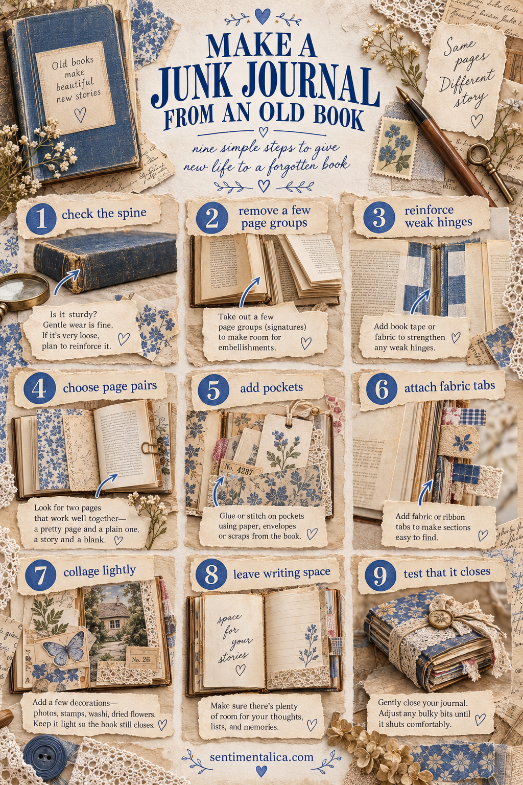

An old book can become a beautiful journal because its cover, paper and signs of use already carry character. Choose a common damaged or unwanted book—not a valuable edition—and work gently enough that it still closes.

1. Check the spine
Open the book at several places. A little wear is fine; loose page blocks or a separating spine need reinforcement before decoration.
2. Remove a few page groups
Collage adds thickness. Carefully remove several complete leaves near the binding, spacing them through the book. Do not cut the threads of a sewn binding.
3. Reinforce weak hinges
Use book-repair tape, strong paper or thin fabric where the cover meets the text block. Let adhesive dry fully before testing.
4. Choose useful page pairs
Mark spreads that open comfortably. Pair an interesting printed page with a quieter one whenever possible.
5. Add pockets
Use envelopes, folded paper or light scraps. Attach only three sides and test the pocket with a thin card before continuing.
6. Attach fabric tabs
Small tabs make sections easy to find. Keep them soft and narrow so the outer edge does not become bulky.
7. Collage lightly
Choose a few decorations, photographs, stamps, handwriting and dried flowers. Avoid stacking thick buttons or many layers in the same area.
8. Leave writing space
Not every printed word needs covering. Add plain or lightly tinted paper where you want to write, and preserve some original text as texture.
9. Test that it closes
Close the book gently after every few spreads. If it begins to fan too widely, remove a bulky layer instead of forcing the spine.
A note about adhesives
Use a glue suitable for paper and apply it thinly. Place wax paper behind a wet page while it dries so neighboring leaves do not stick.
The best altered-book journal still feels like a book: flexible enough to open, sturdy enough to use and spacious enough for stories that have not happened yet.
Choose the right old book
Look for a cover you enjoy holding, a size that opens comfortably on your table and paper strong enough for light collage. Smell the book and inspect it for damp, mould or active insects. Leave anything suspect behind. Check whether it has monetary, local-history or family value before altering it.
A glued modern binding can work, but a sound sewn binding usually tolerates repeated opening better. The book does not need to be antique. A worn recent hardback can be safer and less precious.
Plan thickness from the beginning
Divide the book mentally into sections and spread pockets, fabric and layered pages throughout them. Concentrating every thick element near the front twists the spine. Use photographs printed on ordinary paper when a heavy photo stock is unnecessary.
Keep the first and last few pages simpler because they support the hinges. A decorated title page, contents pocket and closing reflection are enough.
When the journal is complete, store it upright only if the binding remains firm. A heavily altered book may prefer lying flat. Wrap it loosely with ribbon or fabric rather than forcing a tight closure that compresses the spine.